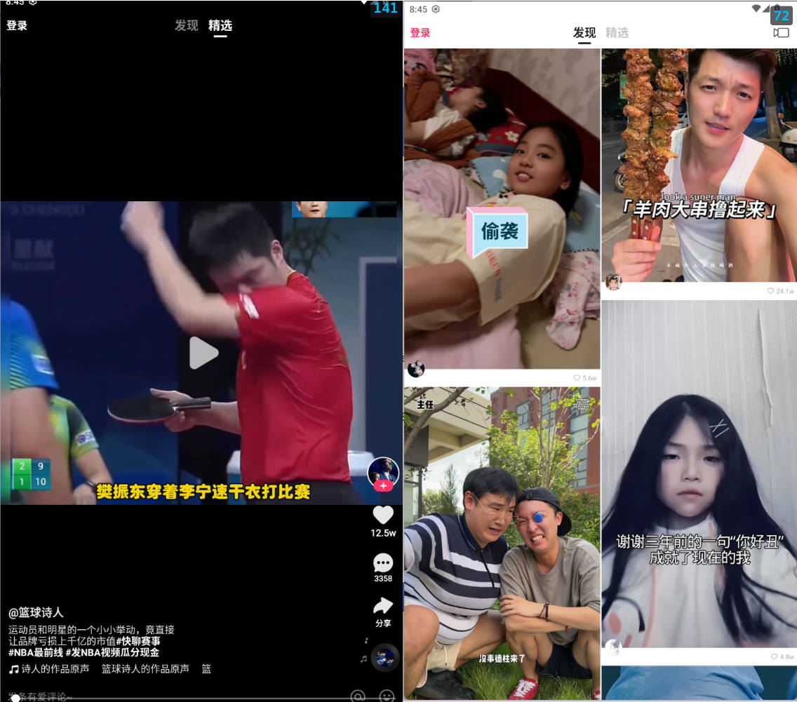

首页
功能介绍
热门内容
联系我们
快手无广告精简版v10.5.4 - 仅11.8MB，纯净看视频！可登录！
这是一款极致精简的快手版本，专为追求纯净观影体验的用户打造。软件无任何广告、无插件、界面超级简洁，体积小巧（仅11.8MB）， 运行流畅，完全专注于短视频浏览，适合低配置手机或希望节省流量和存储空间的用户

软件特点
去除启动广告、信息流广告、视频播放广告等所有广告内容，观看体验干净清爽。
不内置任何第三方插件、不诱导下载、不推送无关应用，真正纯净安装。
界面高度简化，保留核心视频浏览功能，操作直观，老人小孩都能轻松上手。
相比官方版动辄上百MB，此版本体积极小，安装快、不占内存，适合老旧机型或备用机使用。
保留核心短视频推荐、同城、关注、发现等功能，刷视频更流畅，回归“看内容”本质。
无后台自启、无预加载、无自动更新，有效降低流量消耗和电池负担。
立即下载
更多资源